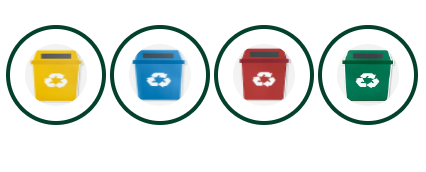

Sustentabilidade Ambiental
A sustentabilidade ambiental relaciona-se à capacidade de suporte,
resiliência e resistência dos ecossistemas.
Pode ser ainda definida como um processo de avaliação entre a economia, a sociedade e a
natureza.
Ler Mais

Sustentabilidade Econômica
Sustentabilidade econômica é um conjunto de práticas econômicas,
financeiras e administrativas que visam o desenvolvimento econômico de um país ou empresa,
preservando o meio ambiente e garantindo a manutenção dos recursos naturais para as futuras
gerações.
Ler Mais
Sustentabilidade Social
Por definição, sustentabilidade social é um conjunto de ações que tem como
propósito melhorar a qualidade de vida da população como um todo,
visando reduzir as desigualdades sociais e ampliar o acesso aos direitos e serviços básicos, como
educação e saúde, por exemplo.
Ler Mais
Por que preservar?
Preservar o meio ambiente é fundamental, afinal, é nele onde estão os recursos naturais necessários para a nossa sobrevivência, como água, alimentos e matérias-primas. Sem esses recursos,
todas as formas de vida do planeta poderão acabar.
Ler Mais